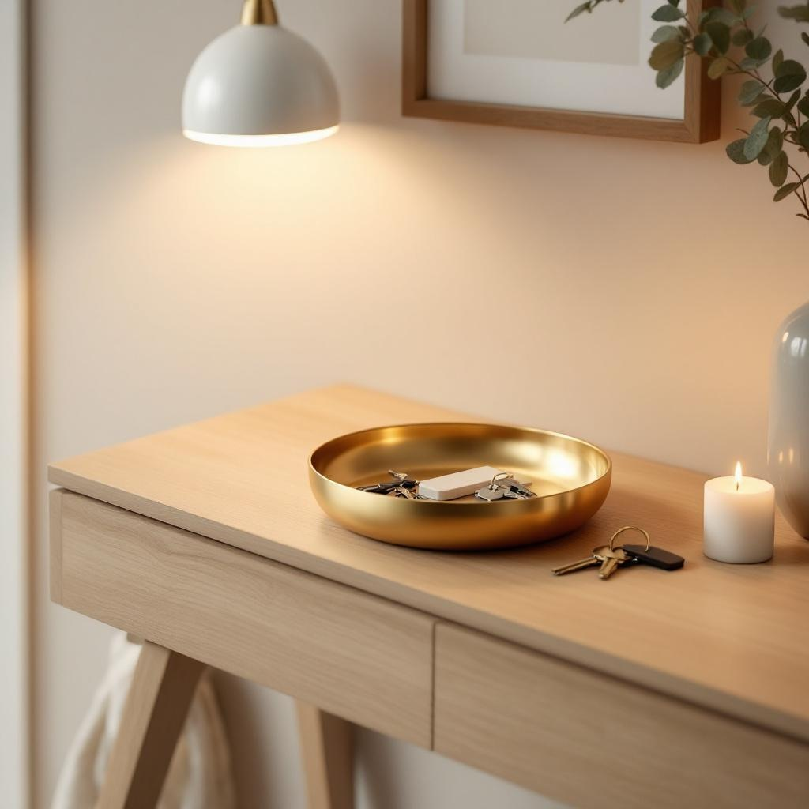

A key tray by the front door is one of the most practical pieces of decor you can own. This gold ceramic bowl is 7.4 inches wide with a shallow rim, just the right size for keys, wallet, sunglasses, and loose coins. The gold finish elevates it from a utility dish to something that actually looks good on a console table or entryway shelf. Small enough to not take up much space, and the kind of thing that makes your entryway feel put together instead of like a drop zone. If you regularly leave the house without your keys, this solves that permanently.
As an Amazon Associate I earn from qualifying purchases at no extra cost to you.